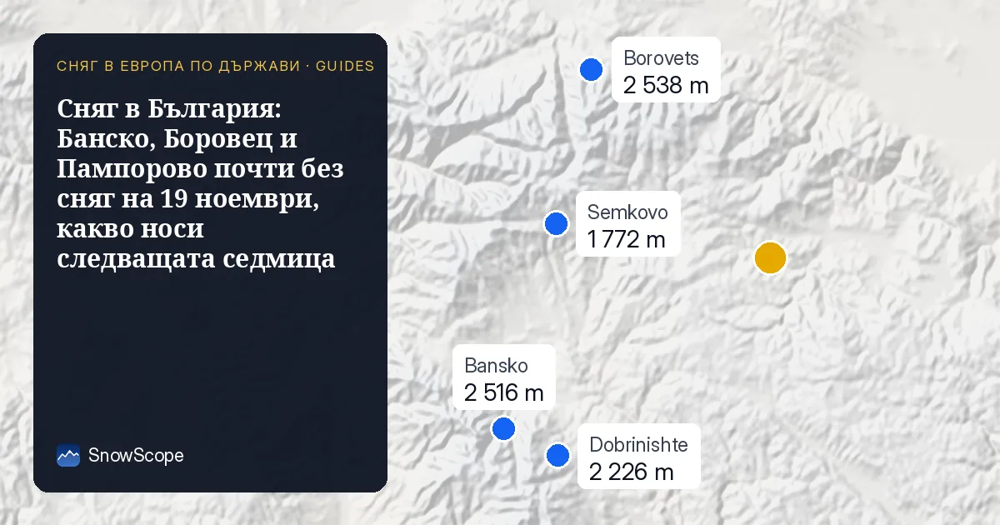
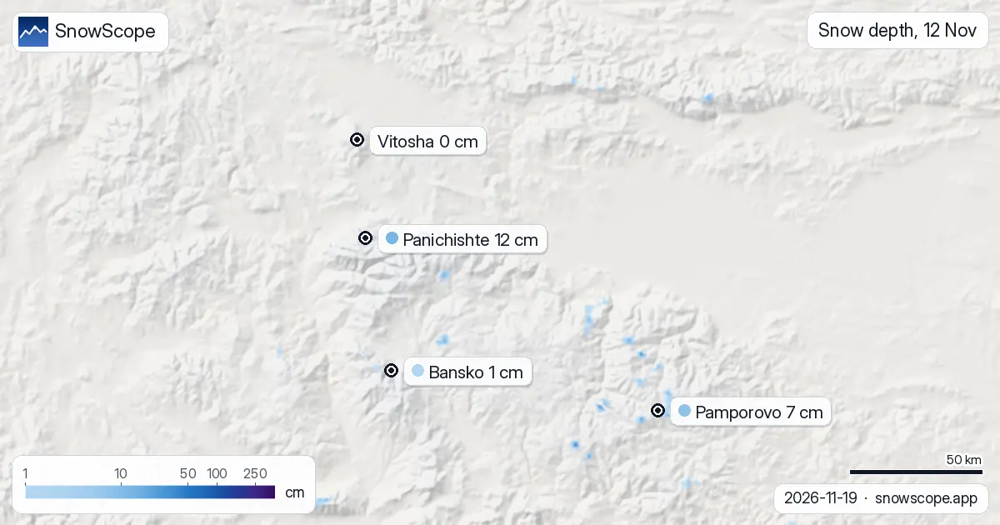

Сняг в България: Банско, Боровец и Пампорово почти без сняг на 19 ноември, какво носи следващата седмица
България пропусна снега, който побели западните Балкани тази седмица. Докато Словения, Хърватия и Сърбия имаха до 39 см по горните писти миналия уикенд, Рила и Пирин събираха само по няколко сантиметра. В четвъртък, 19 ноември, само 2 от 11-те ски зони в България имат сняг по горните писти, Боровец и Банско с по 2 см, а Пампорово и Витоша са без сняг.
Вижте снежната прогноза за Bulgaria в приложението SnowScopeДебелина на снега, известия и 3D карта, безплатно.
Къде има сняг днес
Бял е само самият връх на двата големи курорта, и то едва. Боровец, чиито най-високи лифтове стигат 2538 м под Мусала, има 2 см по горните писти. Банско, с горна точка 2516 м на билото Тодорка в Пирин, също има 2 см. Това не е основа за каране, а лек слой върху скали и трева.
Навсякъде другаде пистите са без сняг: Пампорово и Чепеларе в Родопите, Витоша над София, Мальовица и Паничище в Рила, Добринище и Картала в Пирин.

Седмица на малки снеговалежи
Рила и Пирин получиха сняг тази седмица, но не много наведнъж. Горните писти на Боровец получиха 2 см на 14 ноември, 2 см на 15 ноември, 4 см в понеделник, 16 ноември, 1 см във вторник, 2 см в сряда и 1 см днес: около 12 см за седмицата. Банско имаше подобна поредица, също около 12 см общо. Картала и Добринище получиха по около 8 см, Витоша около 7 см.
Нищо от това не изгради снежна покривка. Всеки малък снеговалеж се стопи или беше издухан преди следващия. Горните писти на Банско тази седмица никога не са имали повече от 4 см, в понеделник, 16 ноември, а Боровец от събота насам остава между 2 и 4 см.
Преди седмица изглеждаше по-добре
На 12 ноември най-високите писти още пазеха остатъка от по-ранен снеговалеж. Боровец имаше 11 см по горните писти, Паничище 12 см край Седемте рилски езера, а Пампорово 7 см, единственият му сняг този месец досега. Картата горе показва точно този ден.
Мекият въздух после стопи повечето за ден: на 13 ноември Боровец падна до 8 см, Паничище до 3 см, а Пампорово остана без сняг. Оттогава в Родопите не е валял нов сняг.
Необичайно ли е това?
Не съвсем. Българските курорти рядко имат естествен сняг за каране в средата на ноември; големите започват сезона през декември, с изкуствен сняг по главните писти и с помощта на първите студове. Зелено Пампорово на 19 ноември е нещо нормално; бяло би било новина.
По-важни са следващите две седмици, когато нощите стават достатъчно студени за производство на сняг и когато първите големи бури от Средиземноморието могат да стигнат Рила и Пирин.
Седмицата напред: един шанс, в понеделник
Петък, 20 ноември, е сух. Събота, 21 ноември, носи следа сняг в Боровец, около 1 см най-много. Единственият снежен ден в прогнозата е понеделник, 23 ноември: Боровец получава от 1 до 12 см по горните писти, със 3 см в средната прогноза, а Банско от 0 до 4 см, в средната прогноза нищо. Останалата част от седмицата е предимно суха.
За цялата седмица от 20 до 26 ноември средната прогноза дава около 5 см за Боровец (от 1 до 14 см) и 1 см за Банско (от 0 до 6 см). Пампорово и Витоша не получават нищо в нито една прогноза. Ако най-високата прогноза за Боровец се сбъдне, върхът на Рила може да е истински бял до вторник, 24 ноември; ако не, България чака декември.
Планиране на пътуване
За ски почивка в България гледайте към декември и следете новините за откриване на всеки курорт; нищо тази седмица не променя това. Ако искате сняг в региона сега, словенските Юлийски Алпи имат пресен сняг днес, а Дурмитор в Черна гора пази тънка покривка на Савин Кук.
Туристите към Мусала или Вихрен да очакват петна сняг и лед край върховете след понеделник, дори ако склоновете под тях останат кафяви.
Съвети за скиори
- Днес: 2 см на върха на Боровец и Банско, без сняг навсякъде другаде.
- Един шанс за сняг: понеделник, 23 ноември, главно в Рила (Боровец).
- Българските курорти обикновено откриват през декември: следете новините на всеки курорт.
More maps (external sites)
About these numbers
Сняг по пистите: горните писти на всеки курорт по дневната карта на снега на SnowScope. Измерен сняг: метеорологични станции, отчитане в 7 ч. местно време. Предстоящ сняг: най-ниската, средната и най-високата прогноза за горната станция на всеки курорт.
Cite this report
For research, teaching or the press: the numbers and charts are free to reuse under CC BY 4.0 with this citation.
SnowScope (2026), Сняг в България: Банско, Боровец и Пампорово почти без сняг на 19 ноември, какво носи следващата седмица, https://snowscope.app/blog/bg/2026/11/bulgaria-snow-bansko-borovets-pamporovo-19-november-2026.html, accessed 2026-11-19
SnowScope (Atlas Labs). (2026, November 19). Сняг в България: Банско, Боровец и Пампорово почти без сняг на 19 ноември, какво носи следващата седмица. SnowScope snow reports. https://snowscope.app/blog/bg/2026/11/bulgaria-snow-bansko-borovets-pamporovo-19-november-2026.html
BibTeX
@misc{snowscope2026bulgariasnowbanskoborove,
author = {{SnowScope (Atlas Labs)}},
title = {Сняг в България: Банско, Боровец и Пампорово почти без сняг на 19 ноември, какво носи следващата седмица},
year = {2026},
month = nov,
howpublished = {\url{https://snowscope.app/blog/bg/2026/11/bulgaria-snow-bansko-borovets-pamporovo-19-november-2026.html}},
note = {Published 2026-11-19 21:45 UTC; accessed 2026-11-19}
}· CC BY 4.0 · Methods, data and tools →
Follow Bulgaria
Безплатно: съобщение, когато идва нов сняг, и прогнозата всяка сутрин.